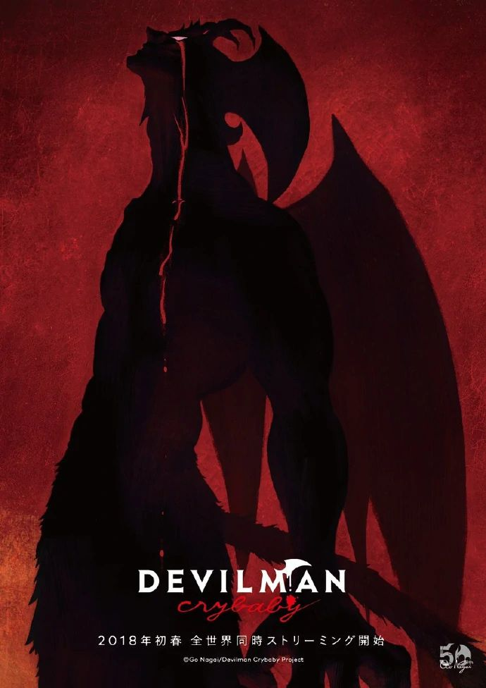

¿Black Clover De Que Trata?
La historia se centra en Asta, un joven que nació sin ningún poder mágico en un mundo donde la magia lo es todo. A pesar de esta desventaja, aspira a convertirse en el Rey Mago, el líder más poderoso del Reino del Trébol. Con la ayuda de un grimorio de cinco hojas (que contiene un demonio anti-magia), y junto a su amigo y rival Yuno, quien es un prodigio mágico, Asta se une a los Caballeros Mágicos para perseguir su sueño y proteger a su reino.
¿Mashle: Magic and Muscles De Que Trata?
Ambientada en un mundo donde la magia es lo más importante y determina el estatus social, la historia sigue a Mash Burnedead, un joven que no puede usar magia. Para vivir en paz, Mash decide inscribirse en una prestigiosa academia de magia y, utilizando únicamente su fuerza física y sus habilidades sobrehumanas (desarrolladas a través de un entrenamiento intenso), intenta abrirse camino y demostrar que el poder muscular es tan válido como la magia, o incluso más.
¿Gintama De Que Trata?
Gintama es una comedia de ciencia ficción ambientada en un Japón feudal alternativo, donde los alienígenas ("Amanto") han invadido y asumido el control. La serie sigue a Gintoki Sakata, un samurái excéntrico que solía luchar contra los Amanto, y a sus amigos Shinpachi Shimura y Kagura. Juntos, trabajan como "yorozuya" (haciendo cualquier trabajo por dinero) y se encuentran en situaciones absurdas, parodias de la cultura pop, peleas serias y momentos emotivos.
¿Hunter x Hunter De Que Trata?
La trama se centra en Gon, Killua, Kurapika y Leorio. Kurapika, un miembro del clan Kurta, ve sus ojos escarlata robados. El grupo se une para recuperarlos, enfrentándose a un antiguo enemigo de Kurapika y desentrañando una conspiración que involucra al infame Gen'ei Ryodan (Trupe Fantasma) y a los oscuros secretos de los Ojos Escarlata.
¿Dandadan De Que Trata?
La historia sigue a Momo Ayase, una chica que cree en fantasmas pero no en aliens, y a Ken Takakura (Okarun), un chico que cree en aliens pero no en fantasmas.
¿strous Life of Saiki K De Que Trata?
Es una comedia que sigue la vida diaria de Kusuo Saiki, un estudiante de secundaria que posee una amplia gama de poderes psíquicos, incluyendo telepatía, telequinesis, teletransportación y más. A pesar de tener estas increíbles habilidades, Saiki solo desea una vida normal y tranquila. Sin embargo, sus poderes atraen constantemente a un grupo de personajes excéntricos y absurdos, lo que hace que su intento de vivir una vida ordinaria sea un desastre cómico.

¿Devilman Crybaby De Que Trata?
Esta serie de anime es una adaptación más moderna y explícita del manga clásico Devilman de Go Nagai. La trama sigue a Akira Fudo, un joven sensible y bondadoso. Su amigo de la infancia, Ryo Asuka, le revela que los demonios existen y están a punto de resurgir para retomar la Tierra.

¿ERASED De Que Trata?
Satoru Fujinuma es un joven mangaka con una habilidad sobrenatural llamada "Revival", que lo transporta involuntariamente unos minutos al pasado antes de que ocurra un accidente o incidente que pone en peligro vidas.
¿Bungo Stray Dogs De Que Trata?
La historia sigue a Atsushi Nakajima, un joven huérfano que es expulsado de su orfanato. Desesperado y sin rumbo, se encuentra con Osamu Dazai, un detective excéntrico y suicida que forma parte de la "Agencia de Detectives Armados".
¿Seraph of the End De Que Trata?
En un mundo post-apocalíptico donde un virus desconocido ha aniquilado a casi toda la humanidad mayor de 13 años, los vampiros emergen de la oscuridad para esclavizar a los supervivientes.
¿My Hero Academia De Que Trata?
La historia se sitúa en un mundo donde la mayoría de la población nace con superpoderes, conocidos como "Quirks" (particularidades). Izuku Midoriya, un joven que nace sin ningún Quirk, sueña con convertirse en un héroe como su ídolo, All Might.
¿Re:Zero De Que Trata?
Subaru Natsuki es un hikikomori (una persona que se aísla socialmente) que de repente es transportado a un mundo de fantasía. Sin embargo, no obtiene poderes heroicos convencionales, sino una habilidad única llamada "Retorno por Muerte" (Return by Death), que le permite retroceder en el tiempo a un "punto de control" cada vez que muere.
¿Overlord De Que Trata?
Momonga es un jugador de un MMORPG de realidad virtual llamado Yggdrasil, que está a punto de cerrar sus servidores. Él decide quedarse conectado hasta el último segundo, pero cuando el reloj marca la medianoche, se da cuenta de que no ha sido desconectado.
¿How Not to Summon a Demon Lord De Que Trata?
Takuma Sakamoto es un hikikomori (una persona que se aísla socialmente) y un jugador invencible en el MMORPG Cross Reverie, donde es conocido como el "Rey Demonio Diablo". Un día, es invocado a un mundo de fantasía por dos chicas, Rem Galleu y Shera L.
¿Mushoku Tensei De Que Trata?
Un hombre hikikomori y nini de 34 años muere atropellado por un camión. Para su sorpresa, reencarna en un mundo de fantasía con espadas y magia, manteniendo los recuerdos de su vida anterior.

¿The 7th Prince Ryougushi ni Tensei Shitara De Que Trata?
Un hechicero prodigio que amaba la magia por encima de todo es asesinado. Sin embargo, antes de morir, desea poder estudiar magia con más libertad en su próxima vida. Reencarna como Lloyd de Saloom, el séptimo príncipe de un reino, un niño con una poderosa línea de sangre mágica pero sin obligaciones políticas significativas.
¿The Wrong Way to Use Healing Magic De Que Trata?
Un joven sin habilidades de combate es transportado a otro mundo y descubre que tiene un talento excepcional para la magia curativa. Sin embargo, su entrenamiento lo lleva por un camino poco convencional, transformándolo en un "curandero musculoso" capaz de aplicar sus poderes de formas inesperadas en el combate, bajo la tutela de una formidable mentora.
¿Tsukimichi -Moonlit Fantasy- De Que Trata?
Makoto Misumi es un joven japonés que es invocado a un mundo de fantasía como "héroe", pero la diosa que lo llama lo considera feo y lo desterra. Con habilidades sobrehumanas y la capacidad de comunicarse con criaturas no humanas, Makoto debe forjar su propio camino, reclutando a aliados poderosos y excéntricos mientras explora este nuevo mundo.
¿Ossan Boukensha De Que Trata?
Esta historia gira en torno a Rick Gladiator, un aventurero de mediana edad que ha sido parte del equipo más fuerte del gremio. Aunque no es joven, ha sido entrenado hasta el límite por sus compañeros increíblemente poderosos, lo que lo convierte en alguien prácticamente invencible. Tras separarse del equipo, Rick decide emprender aventuras por su cuenta, sorprendiendo a todos con su fuerza descomunal a pesar de su edad y apariencia ordinaria.
¿Isekai Mokushiroku Mynoghra: Hametsu no Bunmei de Hajimeru Sekai Seifuku De Que Trata?
Tras morir joven, el protagonista Takuto Ire renace en el mundo de su juego favorito, Eternal Nations, ¡pero como el gobernante demoníaco de la civilización “Mynoghra”! A su lado está Atou, una unidad de héroe demoníaco que cobró forma real.